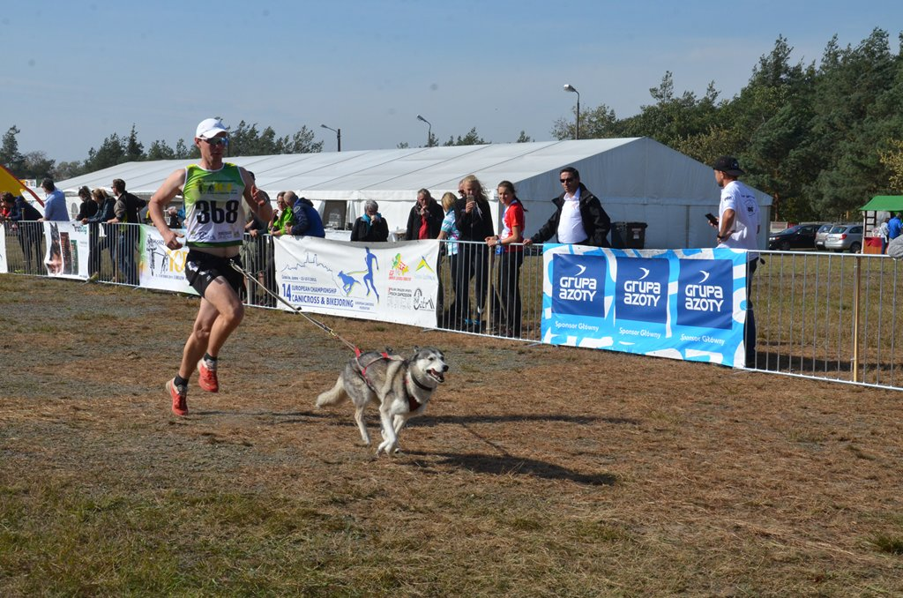
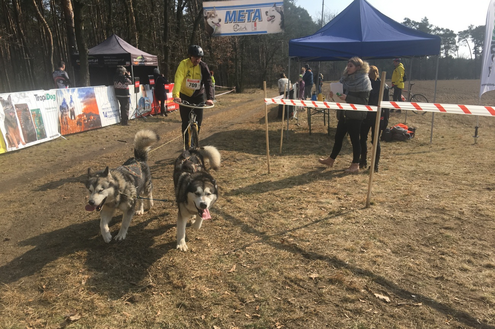
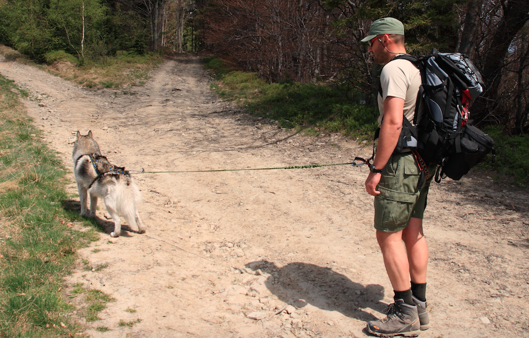
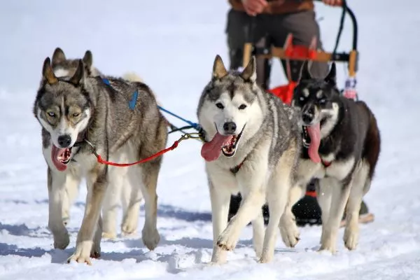

Canicross – jak wyglądają zawody?
Organizowane są najczęściej przez kluby należące do Polski Związek Sportu Psich Zaprzęgów. W turnieju canicrossu mogą brać udział wszystkie psy rasowe i kundelki, jeśli mają co najmniej 15 (na dystansach 5000 metrów) lub 18 miesięcy (na dłuższych dystansach). Zwierzęta muszą być sprawne fizycznie, nie mogą mieć problemów z sercem ani stawami.
Bikejorng
Maszer (kolarz) chcący wystartować w bikejoringu musi mieć co najmniej 15 lat i zdrowego psa o wadze minimum 12 kg, którego w żaden fizyczny sposób nie można zmuszać do biegu. Zaprzęgi bikejoringowe bardzo często osiągają najwyższą średnią prędkość zawodów (ok. 30-38 km/h), a maksymalnie na zjazdach około 50km/h. Stanowi to o widowiskowości bikejoringu i pozwala zakwalifikować go do sportów ekstremalnych.
Dogtrekking
Dogtrekking jest sportem bardzo liberalnym i poza nielicznymi ograniczeniami nie nakłada na zawodników szczególnych wymagań. Aby wziąć udział w zawodach przewodnik powinien mieć ukończone 18 lat. Osoby młodsze 16-18 mogą startować za pisemną zgodą rodziców, a poniżej 16 roku życia tylko pod ich bezpośrednią opieką. Przewodnik może startować maksymalnie z dwoma psami. Psy powinny mieć nie mniej niż rok i nie więcej niż 10 lat. W szczególnych wypadkach, za pisemną zgodą weterynarza, mogą być dopuszczone do startu również psy powyżej 10 roku życia.
W Polsce rozgrywane są zawody dogtrekkingu w ramach Pucharu Polski na trzech dystansach: Mini o długości ok. 15km. Jest to klasa dla początkujących, a jej wyniki nie wliczają się do punktacji Pucharu Polski Midi o długości ok. 25km Long o długości ok. 40km Zawodnicy są klasyfikowani w trzech kategoriach: indywidualnej drużynowej rodzinnej. Rodzinę mogą towarzyszyć np. mąż, żona, dzieci, brat, siostra, itp. Rodzina może startować wspólnie z jedynm psem lub każdy z jej członków z maksymalnie dwoma na osobę.
Psie zaprzęgi
W zawodach mogą brać udział psy, które ukończyły 1,5 roku. Wyścigi psich zaprzęgów to najpopularniejszy rodzaj zawodów psich zaprzęgów. Mogą one odbywać się na saniach lub wózkach. Wyścigi się według długości na: krótkodystansowe, średniodystansowe, długodystansowe. Startujące zaprzęgi podzielone są na klasy: A – nielimitowana, w której wystartować musi nie mniej niż 8 psów, B – klasa 8 psów, wystartować musi od 6-8 psów, C – klasa 6 psów, wystartować musi 4-6 psów. Występuję też na wyścigach podział na rasy gdzie: 1 – zaprzęg, w którym jest minimum jeden husky syberyjski, 2 – zaprzęg, w którym biegają alaskan malamute, groenland-shundy lub samojedy, 3 – wszystkie pozostałe zaprzęgi.
